第 4 章 二维稳态导热#
本章解决：一维方法失效之后怎么办。当温度梯度在两个坐标方向上都显著时，第 2、3 章的一维热阻公式不够用，本章给出三条求解路线：几何与边界条件足够理想化时，用分离变量法拿精确解；典型几何直接查导热形状因子（表 4.1）与无量纲导热速率；一般情形把介质离散成节点网络，列有限差分方程组数值求解。学完能对任一二维稳态导热问题快速选对工具，算出温度场与热流量。
4.0 本章导图#
4.1 替代方法#
前几章只处理温度梯度沿单一坐标方向变化的问题。很多场合这种一维处理错得离谱，必须计及多维效应。本章讨论二维系统在稳态下的几种处理技术。
看一个模型问题：一根长棱柱体（截面不变的长柱）内有二维导热（图 4.1）。两个表面绝热，其余表面维持不同温度 \(T_1 > T_2\)，热量从表面 1 导向表面 2。按傅里叶定律（式 2.3、2.4），固体中局部热流密度是一个矢量，处处垂直于等温线（isotherm）。热流密度矢量的方向用图 4.1 中的热流线（heat flow line）表示，矢量本身是 \(x\)、\(y\) 两个方向热流密度分量（式 2.6）的合成。
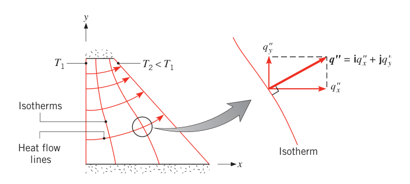
热流线有个漂亮的性质：按定义它处处沿热流方向，所以没有热能穿越热流线——它本身就是一条绝热线（adiabat）。反过来，绝热表面（或对称线）必然是热流线。这两句话是后面画网格、判断对称边界的依据。
导热分析永远有两个目标：
- 求介质内的温度分布。本问题即求 \(T(x, y)\)，靠解热传导方程的相应形式。二维稳态、无内热源、导热系数为常数时，由式 (2.22) 得
- 求热流密度分量 \(q''_x\)、\(q''_y\)。温度场到手后，用速率方程（式 2.6）一步算出。
解式 (4.1) 的方法有三类：
- 解析法：对式 (4.1) 做精确的数学求解。比第 3 章难——现在是偏微分方程而非常微分方程。解通常是复杂的级数与特殊函数，只对少数简单几何与边界条件存在。价值在于温度是连续函数 \(T(x,y)\)，任意点的温度都能算。4.2 节用分离变量法演示一次完整求解。
- 图解法（flux plotting，热流迹描绘法）：只能给出离散点上的近似结果，且限于含绝热与等温边界的二维问题，但能快速估算温度分布。依据正是"等温线必须垂直于热流线"。
- 数值法（有限差分、有限元、边界元）：能处理复杂二维甚至三维几何、各类边界条件，结果是离散点上的准确近似值。4.4、4.5 节展开有限差分法。
拓展：图解法（热流迹描绘法）是什么
原书把图解法放在补充节 4S.1 讲。做法是手绘曲线网格：让等温线族与热流线族互相垂直、把曲边"方格"画得尽量接近正方形，然后数热流通道数与温度增量数。每条热流通道传热相同、每层等温线温降相同，于是热流量等于 \(k\,\Delta T\,(M/N)\)（\(M\) 条热流通道、\(N\) 层温度增量），形状因子也能由此估出。计算机普及后此法已被数值法取代，但"曲线方格"的直觉对检查数值解很有用。
4.2 分离变量法#
模型：一块薄矩形板（或一根长矩形杆），三面维持恒温 \(T_1\)，第四面维持恒温 \(T_2\)（\(T_2 < T_1\)），见图 4.2。板很薄（或杆很长）、表面散热可忽略，垂直于 \(x\)–\(y\) 平面的温度梯度可忽略（\(\partial^2 T/\partial z^2 \approx 0\)），导热只在 \(x\)、\(y\) 方向进行。
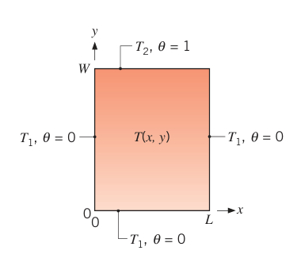
要求温度分布 \(T(x,y)\)。第一步先做无量纲化（nondimensionalization），引入
人话：把温度尺子换掉，让"低温三面"读作 0、"高温顶面"读作 1。代入式 (4.1)，方程形式不变：
方程对 \(x\)、\(y\) 都是二阶，每个坐标要两个边界条件：
变换 (4.2) 的好处立刻显现：四个边界条件里三个变成了齐次（homogeneous，右端为零），\(\theta\) 的取值范围限制在 0 到 1。
乘积解假设。分离变量法假设解可以写成两个一元函数的乘积：一个只含 \(x\)，一个只含 \(y\)：
代入式 (4.3) 并除以 \(XY\)：
左边只跟 \(x\) 有关，右边只跟 \(y\) 有关，而它们对任意 \(x\)、\(y\) 都相等——唯一可能是两边都等于同一个常数。把这个尚未知的分离常数（separation constant）记为 \(\lambda^2\)，得到两个常微分方程：
偏微分方程就此拆成两个常微分方程。\(\lambda^2\) 取正值不是随手定的：取负值或零，都凑不出能同时满足全部边界条件的非零解（直觉见下面的拓展）。
拓展：为什么分离常数必须是正的
若 \(\lambda = 0\)，式 (4.6) 给 \(X = C_1 + C_2 x\)。齐次条件 \(X(0) = 0\) 逼出 \(C_1 = 0\)，\(X(L) = 0\) 再逼出 \(C_2 = 0\)，于是 \(X \equiv 0\)，整个解恒为零，满足不了顶面 \(\theta = 1\)。若 \(\lambda^2 < 0\)（记 \(\lambda = i\mu\)），\(X\) 变成 \(C_1\cosh\mu x + C_2\sinh\mu x\) 型——双曲组合在 \(x > 0\) 上至多一个零点，无法同时满足 \(X(0) = 0\) 与 \(X(L) = 0\) 两个零点，同样只剩平凡解。只有振荡的 \(\sin\) 能在 \(0\) 与 \(L\) 两处都归零，所以 \(\lambda^2 > 0\)。
逐个套边界条件。式 (4.6)、(4.7) 的通解分别是 \(X = C_1\cos\lambda x + C_2\sin\lambda x\)、\(Y = C_3 e^{-\lambda y} + C_4 e^{+\lambda y}\)，于是二维解的一般形式为
- \(\theta(0, y) = 0\)：代入得 \(C_1 = 0\)（\(\cos 0 = 1\)，要处处为零只能让这项消失）。
- \(\theta(x, 0) = 0\)：得 \(C_2\sin\lambda x\,(C_3 + C_4) = 0\)。可以让 \(C_2 = 0\)，但那样 \(\theta \equiv 0\)，满足不了 \(\theta(x, W) = 1\)——平凡解出局。所以必须 \(C_3 = -C_4\)。
- \(\theta(L, y) = 0\)：得 \(C_2 C_4\sin\lambda L\,(e^{\lambda y} - e^{-\lambda y}) = 0\)。要保住非零解，唯一出路是让 \(\sin\lambda L = 0\)，即 \(\lambda\) 只能取一串离散值：
\(n = 0\) 不行——它又给出 \(\theta \equiv 0\)。每个 \(n\) 对应一个解（把常数合并、新的常数允许依赖 \(n\)，并用 \(e^{n\pi y/L} - e^{-n\pi y/L} = 2\sinh(n\pi y/L)\)）：
到这里其实已经得到无穷多个满足方程与齐次边界的解。问题线性，所以把它们全部叠加（superposition）起来仍是解：
最后一个边界条件定系数。把 \(\theta(x, W) = 1\) 代入式 (4.11)：
式 (4.12) 看着吓人，其实有一套标准解法——把右端写成正交函数（orthogonal functions）的展开。函数族 \(g_1(x), g_2(x), \ldots, g_n(x), \ldots\) 在区间 \(a \le x \le b\) 上正交，定义为
人话：不同成员两两"内积"为零，互相不掺假。三角函数族 \(\sin(n\pi x/L)\)、\(\cos(n\pi x/L)\) 在 \(0 \le x \le L\) 上就是正交的。任何函数 \(f(x)\) 都能展开成正交函数族的无穷级数：
求系数：两边同乘 \(g_m(x)\) 并在 \(a\) 到 \(b\) 上积分，
由式 (4.13)，右端除了 \(n = m\) 那一项全部为零：
解出 \(A_m\)，再把 \(m\) 换成 \(n\)（对任何 \(n\) 都成立）：
对本问题：取 \(f(x) = 1\)、\(g_n(x) = \sin(n\pi x/L)\)，代入式 (4.16) 算出
于是式 (4.14) 给出"1 的傅里叶展开"：
对比式 (4.12) 与 (4.17)（两式右端必须逐项相等），定出
代回式 (4.11)，得到最终解：
级数收敛，任意 \((x, y)\) 的 \(\theta\) 都能算，再用式 (4.2) 换回 \(T\)。注意系数结构：\((-1)^{n+1} + 1\) 在 \(n\) 为偶数时为零、\(n\) 为奇数时为 2——只有奇数项有贡献。
图 4.3 画出了按式 (4.19) 算出的等温线与热流线。温度分布关于 \(x = L/2\) 对称，该处 \(\partial T/\partial x = 0\)；由式 (2.6)，对称面绝热，所以它是一条热流线（图中竖直箭头线）。另外注意：顶面两个上角点处规定的温度不连续在物理上站不住——实际上角点附近可以维持很大的温度梯度，但不可能出现真正的跳变。
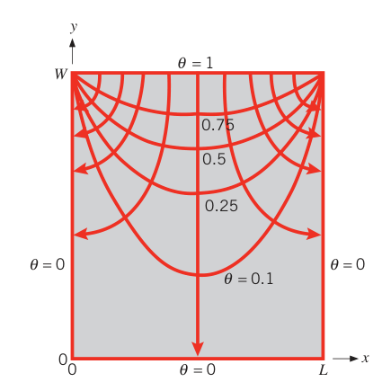
其他几何（圆柱、球等）与边界条件的精确解，导热专著里有现成结果可查。工程上更常用的路子是下面一节：直接查整理好的形状因子。
4.3 导热形状因子与无量纲导热速率#
一般来说，求二维或三维热传导方程的解析解既费时又常常做不到。换个思路：很多二维、三维导热问题可以直接套用现成的解——它们以导热形状因子（conduction shape factor）\(S\) 或稳态无量纲导热速率（dimensionless conduction heat rate）\(q^{*}_{ss}\) 的形式编成表格。形状因子的定义是
其中 \(\Delta T_{1-2}\) 是两边界之间的温差。二维导热热阻随即可以写成
人话：形状因子 \(S\)（单位 m）把"这个几何有多容易导热"打包成一个数，热流量照旧等于温差除以热阻——第 3 章的热阻框架原封不动地延伸到二维。
拓展：形状因子和一维热阻是一套逻辑
一维几何也有自己的形状因子，由第 3 章表 3.3 的热阻公式反推即可：平壁 \(S = A/L\)，圆筒壁 \(S = 2\pi L/\ln(r_2/r_1)\)，球壁 \(S = 4\pi r_1 r_2/(r_2 - r_1)\)。验证：\(q = Sk\Delta T = 2\pi L k\Delta T/\ln(r_2/r_1)\)，正是圆筒壁导热公式。所以"查形状因子"并不是新方法，而是把一维热阻法推广到查表可用的二维几何。
形状因子已对大量二维、三维系统解析求出，常用者汇总在表 4.1。案例 1–8 与案例 11 是两个等温边界之间的二维导热（\(\Delta T_{1-2} = T_1 - T_2\)）；案例 9 的角区是三维导热；案例 10 是等温圆盘（\(T_1\)）与远处温度均匀（\(T_2\)）的半无限大介质之间的导热。
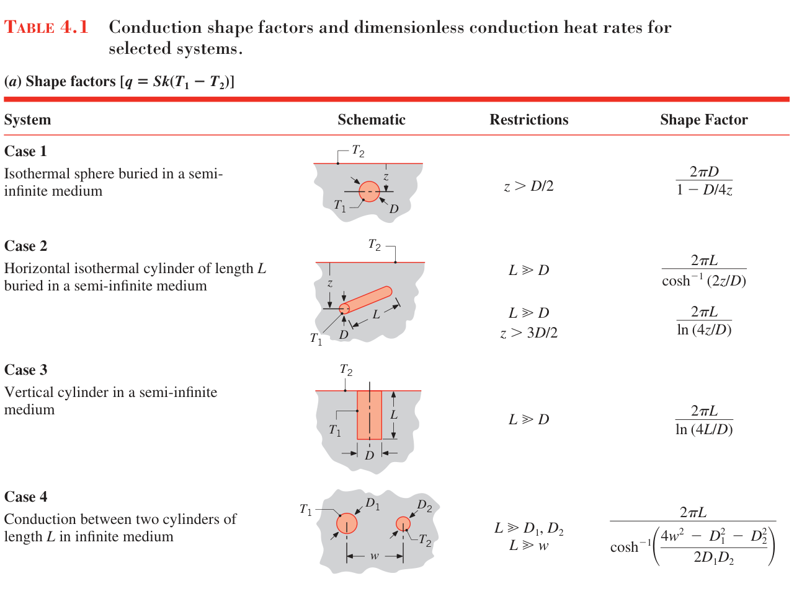
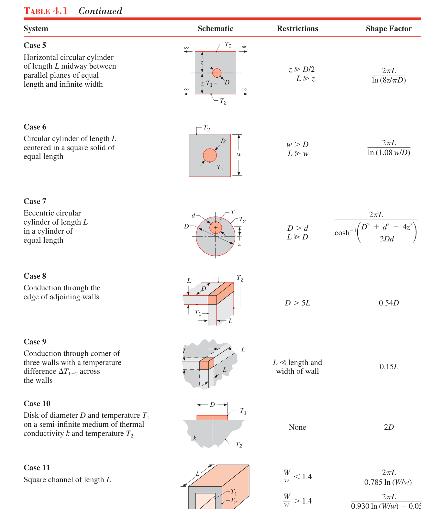
表 4.1(a) 形状因子汇总（\(q = Sk(T_1 - T_2)\)，示意图见上面两幅原书截图）
| 案例 | 系统 | 限制条件 | 形状因子 \(S\) |
|---|---|---|---|
| 1 | 等温球埋入半无限大介质 | \(z > D/2\) | \(\dfrac{2\pi D}{1 - D/(4z)}\) |
| 2 | 水平等温圆柱（长 \(L\)）埋入半无限大介质 | \(L \gg D\) | \(\dfrac{2\pi L}{\cosh^{-1}(2z/D)}\) |
| 2 | 同上（深埋近似） | \(L \gg D\) 且 \(z > 3D/2\) | \(\dfrac{2\pi L}{\ln(4z/D)}\) |
| 3 | 竖直圆柱（长 \(L\)）埋入半无限大介质 | \(L \gg D\) | \(\dfrac{2\pi L}{\ln(4L/D)}\) |
| 4 | 无限大介质中两根圆柱（各长 \(L\)）之间的导热 | \(L \gg D_1, D_2\) 且 \(L \gg w\) | \(\dfrac{2\pi L}{\cosh^{-1}\!\left(\dfrac{4w^2 - D_1^2 - D_2^2}{2D_1 D_2}\right)}\) |
| 5 | 水平圆柱（长 \(L\)）位于两块等长、无限宽的平行壁正中间 | \(z \gg D/2\) 且 \(L \gg z\) | \(\dfrac{2\pi L}{\ln(8z/(\pi D))}\) |
| 6 | 圆柱（长 \(L\)）置于等长正方形柱体的中心 | \(w > D\) 且 \(L \gg w\) | \(\dfrac{2\pi L}{\ln(1.08 w/D)}\) |
| 7 | 偏心圆柱（直径 \(d\)、长 \(L\)）套在等长圆柱（直径 \(D\)）内 | \(D > d\) 且 \(L \gg D\) | \(\dfrac{2\pi L}{\cosh^{-1}\!\left(\dfrac{D^2 + d^2 - 4z^2}{2Dd}\right)}\) |
| 8 | 相邻两墙通过棱边（edge）的导热 | \(D > 5L\) | \(0.54D\) |
| 9 | 三面墙交界角区（corner）的导热，墙两侧温差 \(\Delta T_{1-2}\) | \(L\) 远小于墙的长与宽 | \(0.15L\) |
| 10 | 直径 \(D\) 的等温圆盘贴在半无限大介质（\(k\)、\(T_2\)）表面 | 无 | \(2D\) |
| 11 | 方形通道（长 \(L\)），外壁宽 \(W\)、内壁宽 \(w\) | \(W/w < 1.4\) | \(\dfrac{2\pi L}{0.785\ln(W/w)}\) |
| 11 | 同上 | \(W/w > 1.4\) 且 \(L \gg W\) | \(\dfrac{2\pi L}{0.930\ln(W/w) - 0.050}\) |
（表中 \(z\) 为物体轴线或球心到介质表面的埋深，\(w\) 为两轴间距或外壁半宽，其余符号见各案例示意图。二维几何的形状因子也可用 4S.1 节的图解法估计。）
无限大介质中的物体：无量纲导热速率。案例 12–15 处理另一类问题：等温物体（\(T_1\)）嵌在温度均匀（\(T_2\)）的无限大介质（infinite medium）中。此时定义特征长度（characteristic length）
\(A_s\) 是物体的表面积，导热速率用无量纲导热速率表示：
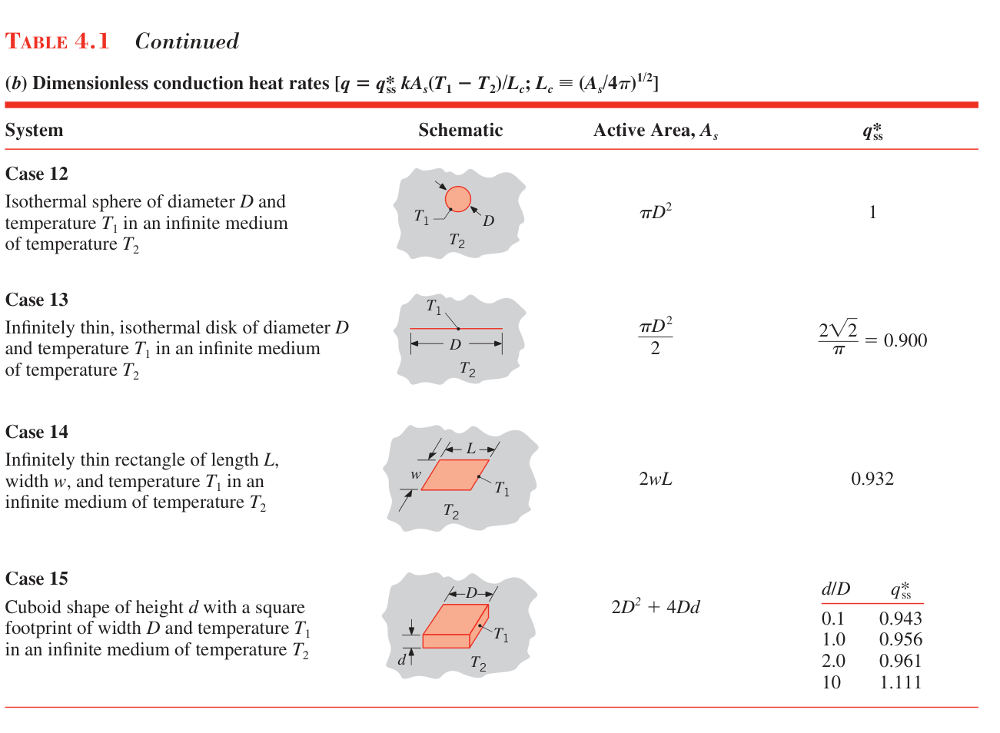
表 4.1(b) 无量纲导热速率汇总（\(q = q^{*}_{ss}\, k A_s (T_1 - T_2)/L_c\)，\(L_c \equiv (A_s/4\pi)^{1/2}\)）
| 案例 | 系统 | 有效面积 \(A_s\) | \(q^{*}_{ss}\) |
|---|---|---|---|
| 12 | 无限大介质中的等温球（直径 \(D\)） | \(\pi D^2\) | 1 |
| 13 | 无限大介质中的无限薄等温圆盘（直径 \(D\)） | \(\pi D^2/2\) | \(2\sqrt{2}/\pi \approx 0.900\) |
| 14 | 无限大介质中的无限薄矩形（长 \(L\)、宽 \(w\)） | \(2wL\) | 约 0.932 |
| 15 | 无限大介质中的立方柱体（高 \(d\)、方形底面边长 \(D\)） | \(2D^2 + 4Dd\) | \(d/D\) 为 0.1、1.0、2.0、10 时分别为 0.943、0.956、0.961、1.111 |
表 4.1(b) 里最引人注目的规律：\(q^{*}_{ss}\) 对差别极大的几何几乎不变（0.90–1.11）。所以对与已知几何相似的构型，\(q^{*}_{ss}\) 可以直接估算甚至插值——例如方柱体在 \(0.1 \le d/D \le 10\) 范围内插表即够准。另外，(b) 表结果能换算成 (a) 表的 \(S\)：把无限大介质看成两个背靠背的半无限大介质，案例 10（半无限介质中的圆盘，\(S = 2D\)）正是由案例 13（无限介质中的薄圆盘）推出的。
均匀热流的修正。表 4.1 的 \(S\) 与 \(q^{*}_{ss}\) 都假设物体等温。若物体表面是均匀热流，物体温度不再均匀——最热点在受热物体外围附近。此时定义 \(S\) 或 \(q^{*}_{ss}\) 所用的温差要换成平均表面温度 \(\bar T_1\) 与 \(T_2\) 之差，或最高表面温度 \(T_{1,\max}\) 与 \(T_2\) 之差。对均匀热流的案例 10 几何（半无限大介质表面上的直径 \(D\) 圆盘）：按平均温差计 \(S = 3\pi^2 D/16\)，按最高温差计 \(S = \pi D/2\)。
【例 4.1】偏心绝缘导线的热阻
已知（Known）：直径 \(d = 5\ \mathrm{mm}\) 的金属电线外包绝缘层，绝缘层导热系数 \(k = 0.35\ \mathrm{W/(m \cdot K)}\)。典型安装条件下，对流与辐射合计的系数 \(h = 15\ \mathrm{W/(m^2 \cdot K)}\)。为把欧姆发热引起的线温升高压到最小，绝缘层厚度按临界绝缘半径设计（见例 3.5）。但涂覆工艺中绝缘层厚度沿圆周有波动，导致导线相对涂层偏心（eccentricity）。求偏心量为临界绝缘层厚度的 50% 时，绝缘层热阻的变化。
求（Find）：与涂层厚度周向变化相关的绝缘层热阻。
示意图（Schematic）：
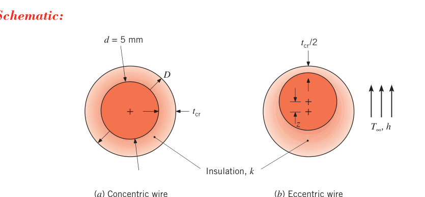
假设（Assumptions）：1. 稳态条件；2. 二维导热；3. 物性为常数；4. 涂层内、外表面均为等温面。
分析（Analysis）：由例 3.5，临界绝缘半径为
临界绝缘层厚度为
同心情形下涂层的热阻用式 (3.33)（圆筒壁导热）计算：
偏心情形用表 4.1 的案例 7（偏心圆柱），偏心量 \(z = 0.5\, t_{cr} = 0.5 \times 0.021\ \mathrm{m} = 0.010\ \mathrm{m}\)，涂层外径 \(D = 2 r_{cr} = 0.046\ \mathrm{m}\)：
绝缘层热阻减少了 \(0.10\ \mathrm{m \cdot K/W}\)，约 10%。
点评（Comments）：
- 局部涂层变薄处局部热阻变小，变厚处局部热阻变大，两种效应互相抵消但不完全——热阻最大的是同心情形。对本应用，导线相对涂层偏心反而带来更好的散热性能。
- 金属导线的导热系数远大于绝缘层时，涂层内表面接近等温——金属导线正是如此。但涂层外表面温度因各处厚度不同并不完全均匀。
4.4 有限差分方程#
解析法只能对付少数简单几何与边界条件，多数二维问题的几何/边界条件都超出解析法的射程。此时最好的替代是数值方法（有限差分、有限元、边界元），数值法还能顺手推广到三维。有限差分法最易上手，适合入门。
4.4.1 节点网络#
解析解能给出介质内任意点的温度，数值解只给离散点的温度。所以数值分析的第一步是选点：把介质划分成若干小区域，每个区域取一个参考点（图 4.4a）。参考点通常叫节点（nodal point，或 node），全体节点的集合叫节点网络（nodal network）、网格（grid）或网格剖分（mesh）。二维系统用双下标编号：\(m\) 标 \(x\) 位置，\(n\) 标 \(y\) 位置。
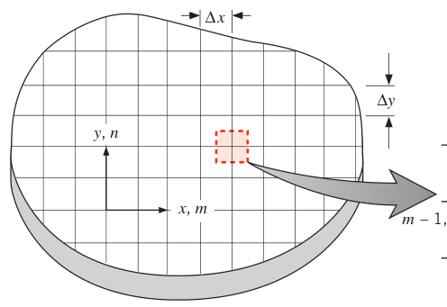
每个节点代表一块区域，节点温度就是该区域平均温度的度量——图 4.4a 中节点 \((m, n)\) 的温度可视为其周围阴影区域（半格宽 \(\Delta x/2\)、\(\Delta y/2\)）的平均温度。节点选取并非随意，取决于几何方便性与精度要求；计算精度强烈依赖节点数。节点足够多（细网格，fine mesh），就能得到准确的解。
4.4.2 热扩散方程的有限差分形式#
数值法要求对每个温度未知的节点写一条守恒方程，然后联立求解。对无内热源、导热系数均匀的二维系统内节点，精确的守恒要求就是热传导方程 (4.1)；用节点网络表述时，要用它的近似——有限差分形式（finite-difference form）。
以 \(\partial^2 T/\partial x^2\) 为例（图 4.4b）。节点 \((m, n)\) 处的二阶导数可以近似为"节点两侧一阶导数之差除以 \(\Delta x\)"：
一阶导数再用相邻节点温度的差商表示：
代入式 (4.24)：
同理：
取 \(\Delta x = \Delta y\) 的正方形网格，把式 (4.27)、(4.28) 代入式 (4.1)：
精确的微分方程化成了近似的代数方程。式 (4.29) 适用于所有与四邻等距的内节点，内容一句话：内节点温度等于四个相邻节点温度的平均。
拓展：中心差分为什么准
式 (4.25)、(4.26) 用节点两侧的差商代替中点的导数，叫中心差分（central difference）。把 \(T_{m\pm1,n}\) 在 \(x_m\) 处做泰勒展开：\(T_{m\pm1} = T_m \pm \Delta x\,T' + \Delta x^2 T''/2 \pm \Delta x^3 T'''/6 + \cdots\)，两式相减时奇次项抵消，得到 \(T' = (T_{m+1} - T_{m-1})/(2\Delta x) + O(\Delta x^2)\)。也就是说截断误差随 \(\Delta x\) 的平方缩小——网格加密一倍，误差大约缩到四分之一。这正是"网格减半、节点数 ×4"能显著提高精度的原因。
4.4.3 能量平衡法#
很多情况下更希望用能量平衡法（energy balance method）来建立差分方程：对节点区域周围的控制体应用能量守恒。它的优势是能处理多种复杂情形——多种材料、内嵌热源、不与坐标轴对齐的表面。实际热流方向（流入还是流出节点）往往未知，所以约定假定所有热流都流入节点：这个假定当然自相矛盾，但只要各项速率方程的写法与该假定一致，最终差分方程的形式就是正确的。稳态、有生成时，式 (1.12c) 的相应形式为
内节点。对图 4.5 中内节点 \((m, n)\) 周围的控制体应用式 (4.30)：二维情形下能量交换来自与四个相邻节点的导热加上内热源生成：
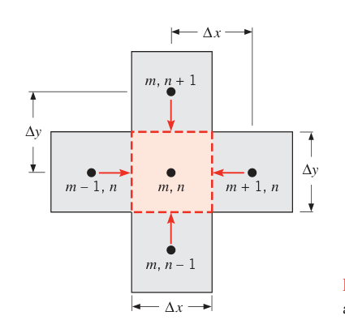
评估导热项时假设导热只沿 \(x\) 或 \(y\) 方向的"车道"（lane）进行，于是可以用简化形式的傅里叶定律。例如从节点 \((m-1, n)\) 传到 \((m, n)\) 的导热速率：
\((\Delta y \cdot 1)\) 是传热面积（单位深度），\((T_{m-1,n} - T_{m,n})/\Delta x\) 是两节点边界处温度梯度的差分近似。其余三条通道：
注意每项都写成"邻温减本温"——这是"热流流入节点"约定的直接后果。代入能量平衡、取 \(\Delta x = \Delta y\)，得到有内热源的内节点差分方程：
无内热源（\(\dot q = 0\)）时退回式 (4.29)。
内角节点（internal corner node）。温度未知点不一定都是内节点——绝热面或对流面上的点也要列方程，这就必须用能量平衡法。以图 4.6 的内角节点为例：该节点代表四分之三格的阴影区域（¾ 格），与温度 \(T_\infty\) 的流体对流换热，同时有四条导热车道从相邻节点进入。导热项：
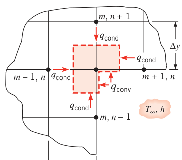
从 \((m-1, n)\) 和 \((m, n+1)\) 来的导热面积正比于全宽 \(\Delta y\) 和 \(\Delta x\)，从 \((m+1, n)\) 和 \((m, n-1)\) 来的只走半宽 \(\Delta y/2\) 和 \(\Delta x/2\) 的车道——因为内角节点的控制体缺了一个角。对流沿 \(x\)、\(y\) 方向各半条车道进行：
这里隐含假设：角区暴露表面温度都等于节点温度 \(T_{m,n}\)——与"整个节点区域用单一温度代表"的概念一致。稳态、无三维效应、无生成时，式 (4.30) 要求式 (4.36)–(4.40) 之和为零。求和整理（\(\Delta x = \Delta y\)）：
常见边界节点的现成模板。无内热源时，几种常见几何的节点能量平衡方程汇总在表 4.2。
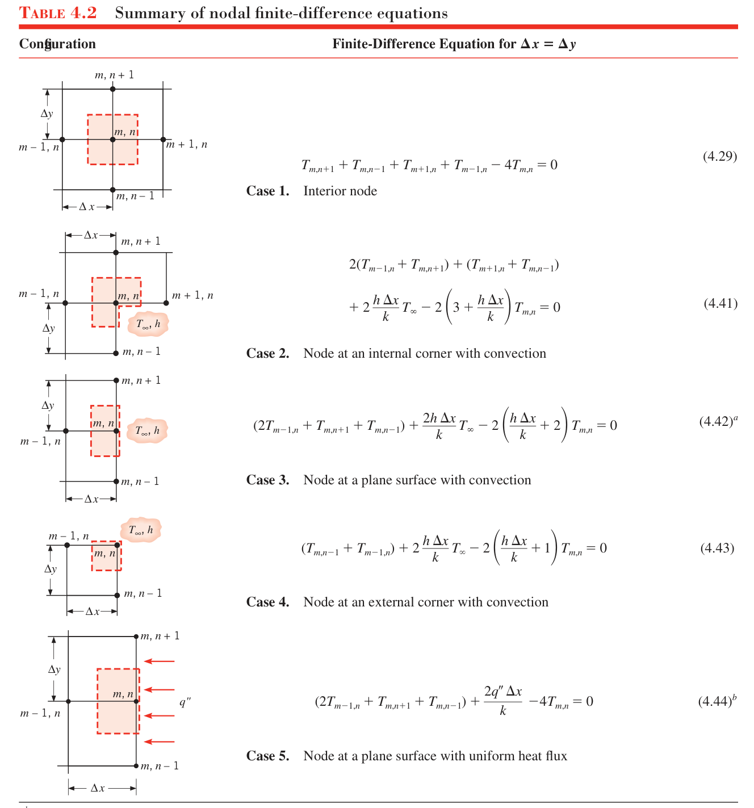
五类模板逐条重排如下（均假设 \(\Delta x = \Delta y\)、无内热源）：
- 案例 1：内节点（interior node）
- 案例 2：内角节点 + 对流（控制体 ¾ 格，两条全宽车道 + 两条半宽车道 + 两个半长对流面）
- 案例 3：平面节点 + 对流（控制体半格：\(\Delta x/2 \times \Delta y\)；对面一条全宽车道 + 上下两条半宽车道 + 一个对流面）
- 案例 4：外角节点（external corner）+ 对流（控制体四分之一格：\(\Delta x/2 \times \Delta y/2\)；两条半宽车道 + 两个半长对流面）
- 案例 5：平面节点 + 均匀热流（对流面换成热流输入 \(q''\)）
表 4.2 的脚注一条顶用：绝热表面（或对称面）的差分方程，只需令 \(h\) 或 \(q''\) 等于零——绝热边不用另推模板。
【例 4.2】绝热表面上节点的有限差分方程
已知（Known）：紧邻绝热表面的节点网络，介质内有均匀内热源。
求（Find）：绝热表面上节点 \((m, n)\) 的有限差分方程。
示意图（Schematic）：
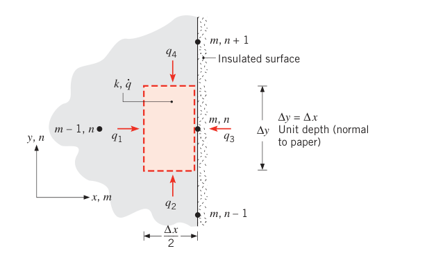
假设（Assumptions）：1. 稳态条件；2. 二维导热；3. 物性为常数；4. 内热源均匀。
分析（Analysis）：把式 (4.30) 用于节点 \((m, n)\) 周围 \((\Delta x/2) \cdot \Delta y \cdot 1\) 的控制体。四条车道：\(q_1\) 从 \((m-1, n)\) 全宽进入，\(q_2\) 从下方半宽进入，\(q_3\) 穿越绝热面为零，\(q_4\) 从上方半宽进入：
能量平衡为 \(q_1 + q_2 + q_3 + q_4 + \dot q\left(\dfrac{\Delta x}{2} \cdot \Delta y \cdot 1\right) = 0\)。代入并除以 \(k/2\)：
点评（Comments）：
- 同一结果也能这样得到：在内节点方程 (4.35) 里用对称条件 \(T_{m+1,n} = T_{m-1,n}\)（绝热面即对称面）。两条路殊途同归——这正是"绝热边令 \(h\) 或 \(q''\) 为零"的另一面。
- 应用演练：某二维系统内热源均匀、速率 \(\dot q\) 未知，固体导热系数已知，一个表面有对流；网格各节点温度已实测。节点布置为：\(T_a\)、\(T_b\) 在上方，\(T_c\) 位于右侧绝热面上（其内邻为 \(T_b\)），\(T_e\) 在绝热面与对流面的外角上，\(T_d\) 在 \(T_e\) 左侧的对流面上；\(\Delta x = \Delta y = 10\ \mathrm{mm}\)，\(h = 50\ \mathrm{W/(m^2 \cdot K)}\)，\(k = 1\ \mathrm{W/(m \cdot K)}\)，\(T_\infty = 200.0^\circ\mathrm{C}\)，实测 \(T_a = 235.9^\circ\mathrm{C}\)、\(T_b = 227.6^\circ\mathrm{C}\)、\(T_c = 230.9^\circ\mathrm{C}\)、\(T_d = 220.1^\circ\mathrm{C}\)、\(T_e = 222.4^\circ\mathrm{C}\)。对内邻全宽、上下两条车道的节点 \(c\) 用刚推出的方程：
再用 \(\dot q\) 检查节点 \(e\)（外角：顶面从 \(T_c\) 半宽导热、左面从 \(T_d\) 半宽导热、右面绝热、底面对流）的能量平衡是否满足：
能量平衡不能精确归零，原因有三：温度测量误差、建立差分方程时的近似、网格较粗。
热阻形式。相邻节点间的传热速率也可以用热阻写出。以图 4.6 为例，从 \((m-1, n)\) 到 \((m, n)\) 的导热速率
与式 (4.36) 等价；对流速率
与式 (4.40) 等价。热阻概念的一个漂亮应用是接触热阻界面（图 4.7）：两种不同材料 A、B 相接，界面有接触热阻 \(R''_{t,c}\)。从节点 \((m, n)\)（材料 A 内）到 \((m, n-1)\)（材料 B 内）的传热速率为
单位深度下总热阻是三段串联（A 内半格导热 + 界面接触热阻 + B 内半格导热）：
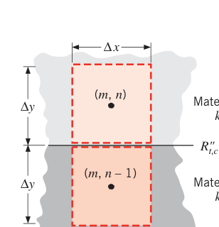
4.5 求解有限差分方程#
节点网络建好、每个节点写好差分方程之后，剩下的问题是解一组线性代数方程。本节把方程组写成矩阵形式并讨论矩阵求逆解法，最后讲怎么验算。
4.5.1 化为矩阵方程#
设共有 \(N\) 个未知温度、\(N\) 条差分方程。把节点从双下标 \((m, n)\) 改成单整数下标，方程组写成：
系数 \(a_{11}, a_{12}, \ldots\) 与常数 \(C_1, \ldots\) 都是已知量（由 \(\Delta x\)、\(k\)、\(h\)、\(T_\infty\) 等组成）。矩阵记法：
其中系数矩阵 \([A]\) 是 \(N \times N\) 方阵（第一下标行、第二下标列），\([T]\) 与 \([C]\) 是单列的列向量，分别叫解向量与右端向量。解线性方程组的数学方法很多，大量计算软件内置了求解功能；小型矩阵用手算或可编程计算器即可。适合手算或机算的一种经典方法是高斯–赛德尔迭代（Gauss–Seidel method），原书在附录 D 中给出。
拓展：高斯–赛德尔迭代的思想（附录 D）
把第 \(i\) 条方程改写成"对角元归一"的形式 \(T_i = (C_i - \sum_{j \ne i} a_{ij} T_j)/a_{ii}\)，先给所有温度猜一组初值，然后逐个节点用最新算出的邻居温度更新（算到第 \(i\) 个节点时，\(j < i\) 的邻居已经换了新值），一轮一轮迭代下去，直到任意两次迭代之间的温度变化小于设定容差。导热差分方程组对角占优，迭代必收敛。
4.5.2 验证解的精度#
数值解写完、解出来之后，第一步验算是好习惯：把算出的温度代回包围全部已解节点区域的控制面上的能量平衡。若平衡不能高精度满足，回头查差分方程的错误。
即使方程列对了、解也对，结果仍可能只是真实温度场的粗略近似——根源在于节点间距 \((\Delta x, \Delta y)\) 有限、傅里叶定律被差商近似（如 \(k(\Delta y \cdot 1)(T_{m-1,n} - T_{m,n})/\Delta x\) 代替 \(-k(dy \cdot 1)\partial T/\partial x\)）。网格加密（减小 \(\Delta x\)、\(\Delta y\)），近似随之变准。所以想要准确结果就要做网格研究（grid study）：加密网格重算并与粗网格对比，例如把 \(\Delta x\)、\(\Delta y\) 减半（节点数与方程数 ×4），若两者不吻合就继续加密，直到计算温度不再明显依赖网格选择——得到网格无关（grid-independent）的结果，才算对物理问题给出了准确解。
另一个验证选项是与精确解对比：比如把图 4.2 问题的差分解与式 (4.19) 的精确解对照。限制在于：很少会有人对存在精确解的问题求数值解。实践中更常用的做法是：给复杂问题求数值解之前，先把差分流程在一个简化版本上试跑一遍。
【例 4.3】燃气轮机叶片内冷通道的温度场
已知（Known）：燃气轮机叶片技术进步的主要目标之一是提高叶片的许用温度上限——它决定了透平进气温度，进而强烈影响整机性能。除用高温高强度超级合金制造叶片外，常用手段是在叶片内部加工流动通道、让空气流过通道冷却。把叶片近似为开有矩形通道的长方体：叶片导热系数 \(k = 25\ \mathrm{W/(m \cdot K)}\)、厚 \(6\ \mathrm{mm}\)，每个通道横截面 \(2\ \mathrm{mm} \times 6\ \mathrm{mm}\)，相邻通道间距 \(4\ \mathrm{mm}\)。运行工况：燃气侧 \(h_o = 1000\ \mathrm{W/(m^2 \cdot K)}\)、\(T_{\infty,o} = 1700\ \mathrm{K}\)；空气侧 \(h_i = 200\ \mathrm{W/(m^2 \cdot K)}\)、\(T_{\infty,i} = 400\ \mathrm{K}\)。求叶片内的温度场、单位通道长度的传热速率，以及温度最高点的位置。
求（Find）：叶片内的温度场（含最高温度位置）；通向通道的单位长度传热速率。
示意图（Schematic）：
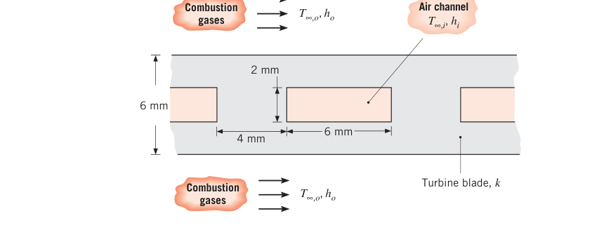
假设（Assumptions）：1. 稳态、二维导热；2. 物性为常数。
分析（Analysis）：几何与对称性先吃透：叶片厚 \(6\ \mathrm{mm}\)（通道贯穿全厚），通道宽 \(2\ \mathrm{mm}\)、间距（腹板宽）\(4\ \mathrm{mm}\)，上下两个外表面都是燃气面。对称线有三条：通道竖直中心线、通道间腹板（web）竖直中心线、通道水平中心线（即叶片半厚处的中线）。取四分之一截面建模：水平方向从腹板中心线到通道中心线共 \(2\ \mathrm{mm} + 3\ \mathrm{mm} = 5\ \mathrm{mm}\)，竖直方向从叶片表面到半厚中线共 \(3\ \mathrm{mm}\)。取网格 \(\Delta x = \Delta y = 1\ \mathrm{mm}\)，节点网络共 21 个节点（图上三条对称绝热线已标出）：顶行 1–6 全部是燃气面节点，第 3 行的 15–18 是通道壁节点，19–21 在底部对称绝热线上，通道四分之一区域（右下角）没有节点。
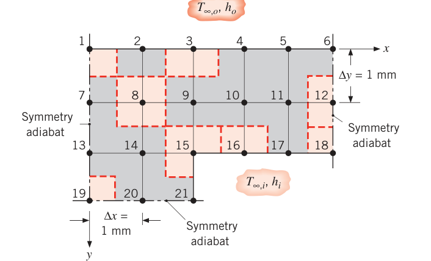
差分方程来源：节点 1、6、18、19、21 用能量平衡法现场推导，其余套表 4.2。各节点方程如下（\(\dfrac{h_o \Delta x}{k} = 0.04\)，\(\dfrac{h_i \Delta x}{k} = 0.008\)）：
- 节点 1（外角式四分之一格：两条半宽导热车道 + 燃气对流 + 左侧对称绝热）：
- 节点 6 与节点 1 表面条件等价（2 条导热 + 1 条对流 + 1 条绝热），方程同型。节点 2–5 对应表 4.2 案例 3（平面对流，表面朝上、全宽车道朝下）。以节点 3 为例：
- 节点 7、12、13、20 对应案例 5（均匀热流面，取 \(q'' = 0\)，即绝热/对称面）。以节点 12 为例：
- 节点 8–11、14 是内节点（案例 1）。以节点 8 为例：
- 节点 15 是内角（案例 2）：
- 节点 16、17 在通道水平壁上（案例 3，对流面朝下）：
- 节点 18、21 各是"四分之一格 + 通道对流"的特殊节点：两条半宽导热车道 + 半条对流车道，相邻绝热面上无传热。对节点 18 列能量平衡：
- 节点 19 是最后一个特殊节点：两条绝热面（左侧对称 + 底部对称）、两条导热车道：
节点 21 的方程与节点 18 同型（\(T_{15} + T_{20} - (2 + h_i\Delta x/k)T_{21} = -(h_i\Delta x/k)T_{\infty,i}\)）。21 条方程联立求解——原书用 IHT 软件联立（任何商用求解器或科学计算器均可），本质上就是 4.5.1 节的线性方程组求解。解得各节点温度：
| \(T_1\) | \(T_2\) | \(T_3\) | \(T_4\) | \(T_5\) | \(T_6\) | \(T_7\) |
|---|---|---|---|---|---|---|
| 1526.0 K | 1525.3 K | 1523.6 K | 1521.9 K | 1520.8 K | 1520.5 K | 1519.7 K |
| \(T_8\) | \(T_9\) | \(T_{10}\) | \(T_{11}\) | \(T_{12}\) | \(T_{13}\) | \(T_{14}\) |
|---|---|---|---|---|---|---|
| 1518.8 K | 1516.5 K | 1514.5 K | 1513.3 K | 1512.9 K | 1515.1 K | 1513.7 K |
| \(T_{15}\) | \(T_{16}\) | \(T_{17}\) | \(T_{18}\) | \(T_{19}\) | \(T_{20}\) | \(T_{21}\) |
|---|---|---|---|---|---|---|
| 1509.2 K | 1506.4 K | 1505.0 K | 1504.5 K | 1513.4 K | 1511.7 K | 1506.0 K |
温度场也可以画成等温线（下图画出四条）与热流线：热流线处处垂直于等温线，并与对称绝热线重合；燃气面与空气面不是等温面，所以热流线与这两个边界不垂直。
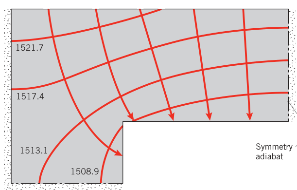
不出所料，最高温度出现在离冷却介质最远的节点 1。燃气侧表面温度尤其值得关心，差分预测画成曲线（节点温度之间以直线相连）：
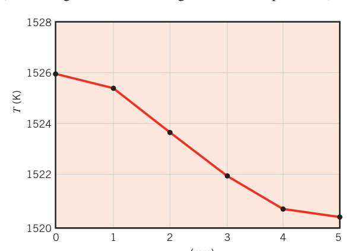
单位通道长度的传热速率有两条算法。按"叶片传给空气"算：
按"燃气传给叶片"算：
因子 4 来自对称性（模型只是叶片的四分之一）。两种算法结果一致：
点评（Comments）：
- 矩阵记法：21 条方程即式 (4.48) 的 \([A][T] = [C]\)。系数里可提出 \(a = 2.04\)（= \(2 + h_o\Delta x/k\)，节点 1、6 的对角元）、\(b = 4.08\)（= \(2(h_o\Delta x/k + 2)\)，节点 2–5）、\(c = 6.016\)（= \(2(3 + h_i\Delta x/k)\)，节点 15）、\(d = 4.016\)（= \(2(h_i\Delta x/k + 2)\)，节点 16、17）、\(e = 2.008\)（= \(2 + h_i\Delta x/k\)，节点 18、21）、\(f = 68\)（= \((h_o\Delta x/k)\,T_{\infty,o}\)）、\(g = 3.2\)（= \((h_i\Delta x/k)\,T_{\infty,i}\)）。写成矩阵方程后即可调用标准的矩阵求解工具。
- 为确认列方程和解方程都没出错，应用算出的温度验证"包围全部节点区域的控制面"能量守恒——上面两种 \(q'\) 算法结果相等，验算已经完成。
- 网格加密能提高精度。把网格减半（\(\Delta x = \Delta y = 0.5\ \mathrm{mm}\)，未知节点温度增至 65 个），关键结果变为：\(T_1 = 1525.9\ \mathrm{K}\)、\(T_6 = 1520.5\ \mathrm{K}\)、\(T_{15} = 1509.2\ \mathrm{K}\)、\(T_{18} = 1504.5\ \mathrm{K}\)、\(T_{19} = 1513.5\ \mathrm{K}\)、\(T_{21} = 1505.7\ \mathrm{K}\)、\(q' = 3539.9\ \mathrm{W/m}\)。两套结果吻合极好。细网格的建模与计算成本更高，很多场合粗网格已够用——选多粗的网格是工程师的判断题。
- 燃气轮机行业一直想压低叶片温度：换导热系数更大的合金、加大通道内冷却流量（提高 \(h_i\)）都有效。用 \(\Delta x = \Delta y = 1\ \mathrm{mm}\) 的差分解做参数扫描：
| \(k\) [W/(m·K)] | \(h_i\) [W/(m²·K)] | \(T_1\) [K] | \(q'\) [W/m] |
|---|---|---|---|
| 25 | 200 | 1526.0 | 3540.6 |
| 50 | 200 | 1523.4 | 3563.3 |
| 25 | 1000 | 1154.5 | 11 095.5 |
| 50 | 1000 | 1138.9 | 11 320.7 |
为什么加大 \(k\)、\(h_i\) 都能降温？为什么 \(h_i\) 的影响远大于 \(k\)？——通道侧的对流热阻是串联热路中的主导环节，\(h_i\) 从 200 提到 1000 直接砍掉这段热阻；而 \(k\) 翻倍只把固体导热段的热阻减半，占总热阻的份额小得多。
- 叶片外表面温度极高，对周围环境的辐射损失可能显著。差分分析中可把辐射速率方程线性化（式 1.8、1.9），像对流一样处理；但 \(h_r\) 依赖表面温度，需要迭代求解，保证每个节点的表面温度与算 \(h_r\) 用的温度一致。
4.6 小结#
本章的目标是认识二维导热问题的性质并掌握求解方法。面对一个二维问题，先按顺序排查三件武器：有无现成精确解（分离变量类级数解）；有无现成形状因子或无量纲导热速率（表 4.1）；都没有，就上有限差分或有限元。用数值法时要理解离散化的本质：把介质切成节点网络，给每个节点列能量守恒的差分方程，联立求解，再用总能量平衡与网格研究验收。
原书章末自测问题（4.6 节复习用）
- 等温线是什么？热流线是什么？两者几何上什么关系？（处处垂直）
- 绝热线是什么？它与对称线什么关系？等温线与它如何相交？（绝热线即热流线，对称线就是绝热线；等温线与之垂直）
- 刻画"几何决定热流量与总温差关系"的参数有哪些？它们与导热热阻什么关系？（形状因子 \(S\) 与无量纲导热速率 \(q^{*}_{ss}\)；\(R_{t,cond}(2D) = 1/(Sk)\)）
- 节点温度代表什么？节点温度的精度与节点网络的给定方式有什么关系？（代表该节点区域的平均温度；网格越细越准）
坑与陷阱#
8 个容易踩的坑
- 查表 4.1 先核限制条件：案例 2 的 \(\ln(4z/D)\) 形式只在 \(z > 3D/2\) 才准（浅埋用 \(\cosh^{-1}\) 形式）；案例 11 以 \(W/w = 1.4\) 分界换公式；案例 8 要 \(D > 5L\)；案例 9 只管墙角区且墙的长宽远大于 \(L\)。拿起来就用，错得悄无声息。
- 分离常数 \(\lambda^2\) 必须为正：取零或负值只会得到平凡解（或凑不齐边界条件），整套级数解无从谈起。根源：\(x\) 方向有两个齐次零点，只有振荡的 \(\sin\) 能满足。
- 系数 \(C_n\) 只由 \(y = W\) 那一行定：傅里叶展开（式 4.17）展开的是 \(f(x) = 1\)，别把这套系数错用到别的边界；\(\theta\) 是无量纲温度，求真实温度必须回代式 (4.2)。
- 边界节点的控制体不是整格：平面节点半格（\(\Delta x/2 \times \Delta y\)）、外角节点四分之一格、内角节点四分之三格。车道宽度（\(\Delta y/2\)、\(\Delta x/2\)）与对流面积（半长）漏写或写错是最高频错误。
- 能量平衡法统一"全部流入"：每条速率项都写成（邻温 − 本温）的形式再加生成项等于零，不要自作聪明提前把某项改成"流出为负"——符号约定一乱，方程就错。
- 五类模板长得很像，系数别背串：案例 ⅔/4 的对流项都是 \(2(h\Delta x/k)\,T_\infty\)，但 \(T_{m,n}\) 的系数各不相同：\(2(3 + h\Delta x/k)\)、\(2(h\Delta x/k + 2)\)、\(2(h\Delta x/k + 1)\)。拿不准就现场做一次能量平衡，两分钟的事。
- 对称线 = 绝热线 = 热流线：对称边上的节点用 \(h = 0\) 或 \(q'' = 0\) 的模板；例 4.3 里 \(q'\) 公式开头的因子 4 就是"模型只算四分之一"补回来的，漏乘直接少 75%。
- 数值解必须验收两次：一是把温度代回总能量平衡（例 4.2 演示了残差 0.025 W 的"近似成立"）；二是网格无关性——网格减半、节点 ×4 重算对比（例 4.3 的 1526.0 K vs 1525.9 K）。跳过验收的数值结果不可信。
速览#
- 二维稳态、无内热源、常物性：温度场满足拉普拉斯方程 (4.1)；等温线与热流线处处垂直；没有热流穿越热流线——热流线即绝热线，对称线就是热流线。
- 求解路线按序排查：精确解（分离变量，限简单几何）→ 形状因子/无量纲导热速率（查表 4.1）→ 有限差分（有限差分/有限元/边界元，任意几何与三维）。
- 分离变量五步：无量纲化 \(\theta = (T - T_1)/(T_2 - T_1)\) 凑出三个齐次边界 → 乘积解 \(\theta = XY\) → 分离常数 \(\lambda^2 > 0\)，特征值 \(\lambda = n\pi/L\) → 级数叠加 → 正交函数（傅里叶展开）定 \(C_n\)。
- 最终解 (4.19)：\(\theta = \frac{2}{\pi}\sum \frac{(-1)^{n+1}+1}{n}\sin\frac{n\pi x}{L}\,\frac{\sinh(n\pi y/L)}{\sinh(n\pi W/L)}\)；只有奇数 \(n\) 有贡献；解关于 \(x = L/2\) 对称，对称面是绝热的热流线。
- 形状因子：\(q = Sk\Delta T_{1-2}\)，二维热阻 \(R = 1/(Sk)\)；一维退化形式为 \(A/L\)、\(2\pi L/\ln(r_2/r_1)\)、\(4\pi r_1 r_2/(r_2 - r_1)\)；表 4.1(a) 给 11 种几何（埋球、埋管、偏心圆柱、墙棱边、墙角、圆盘、方形通道等）。
- 无限大介质中的物体：\(L_c = (A_s/4\pi)^{1/2}\)、\(q = q^{*}_{ss} k A_s \Delta T/L_c\)；\(q^{*}_{ss}\) 对各种几何都接近 1（0.90–1.11），可按相似性估算；表 4.1(b) ↔ (a) 可互相换算。
- 均匀热流表面要用平均或最高温差定义温差：均匀热流圆盘 \(S = 3\pi^2 D/16\)（平均）、\(\pi D/2\)（最高），均小于等温盘的 \(2D\)。
- 有限差分核心：内节点温度 = 四邻平均（\(\Delta x = \Delta y\)，式 4.29）；有内热源加 \(\dot q(\Delta x)^2/k\)（式 4.35）；边界节点用能量平衡法现场推，控制体是半格/四分之一格/四分之三格。
- 表 4.2 五类模板（内节点、内角对流、平面对流、外角对流、平面热流）；绝热面或对称面 = 令 \(h\) 或 \(q''\) 为零；接触热阻界面按三段串联热阻写（式 4.46）。
- 解方程组 \([A][T] = [C]\)：矩阵求逆或高斯–赛德尔迭代（附录 D）；验收两件套——总能量平衡 + 网格无关性研究。例 4.3：叶片最高温在最远离冷却液的节点 1，两条路径算得 \(q' = 3540.6\ \mathrm{W/m}\)。
术语速查#
| 英文 | 中文 | 一句话 |
|---|---|---|
| two-dimensional, steady-state conduction | 二维稳态导热 | 温度梯度在两个坐标方向都显著的稳态导热 |
| isotherm | 等温线 | 温度相同的点的连线，热流密度矢量处处垂直于它 |
| heat flow line | 热流线 | 处处沿热流方向的曲线，无热流穿越 |
| adiabat | 绝热线 | 即热流线的别名；绝热面与对称线都是热流线 |
| flux plotting (graphical method) | 热流迹描绘法（图解法） | 手绘正交曲线网格估算温度场与热流量的老方法（原书 4S.1） |
| separation of variables | 分离变量法 | 假设解为 \(X(x)Y(y)\)，把偏微分方程拆成两个常微分方程 |
| separation constant | 分离常数 | 拆方程时引入的常数 \(\lambda^2\)，必须取正 |
| homogeneous boundary condition | 齐次边界条件 | 边界值归零的条件；无量纲化后三个边界齐次 |
| eigenvalue | 特征值 | 使非平凡解存在的离散 \(\lambda = n\pi/L\) |
| orthogonal functions | 正交函数 | 区间上两两积分（内积）为零的函数族，如 \(\sin(n\pi x/L)\) |
| Fourier series | 傅里叶级数 | 任意函数按正交函数族的展开，用来定级数系数 |
| superposition | 叠加原理 | 线性问题各特解之和仍是解 |
| conduction shape factor | 导热形状因子 | \(q = Sk\Delta T_{1-2}\) 中的几何因子 \(S\)，单位 m |
| dimensionless conduction heat rate | 无量纲导热速率 | \(q^{*}_{ss} = qL_c/[kA_s\Delta T]\)，无限介质问题用 |
| characteristic length | 特征长度 | \(L_c = (A_s/4\pi)^{1/2}\)，随表面积定义 |
| semi-infinite medium | 半无限大介质 | 一侧有表面、另一侧无限延伸的介质（埋地问题） |
| infinite medium | 无限大介质 | 物体嵌在其中、远处处温度均匀的介质 |
| nodal point / nodal network | 节点 / 节点网络 | 离散化后的参考点及其集合，也叫网格、mesh |
| finite-difference equation | 有限差分方程 | 节点温度之间的近似代数关系 |
| energy balance method | 能量平衡法 | 对节点控制体列能量守恒来推差分方程的方法 |
| interior node | 内部节点 | 与四邻等距的节点，温度等于四邻平均 |
| internal / external corner node | 内角 / 外角节点 | 控制体为四分之三格 / 四分之一格的角部节点 |
| adiabatic (insulated) surface | 绝热面（隔热面） | 零热流边界；差分方程令 \(h\) 或 \(q''\) 为零 |
| symmetry adiabat | 对称绝热线 | 几何对称面即绝热面，可用来切小模型 |
| thermal contact resistance | 接触热阻 | 界面上的附加热阻 \(R''_{t,c}\)，差分方程按串联热阻计入 |
| Gauss–Seidel iteration | 高斯–赛德尔迭代 | 逐点用最新邻值更新的线性方程组迭代解法（附录 D） |
| grid independence | 网格无关性 | 加密网格后结果不再明显变化，数值解才算可信 |
| eccentricity | 偏心距 | 两圆心间距 \(z\)，偏心圆柱形状因子（案例 7）用它 |